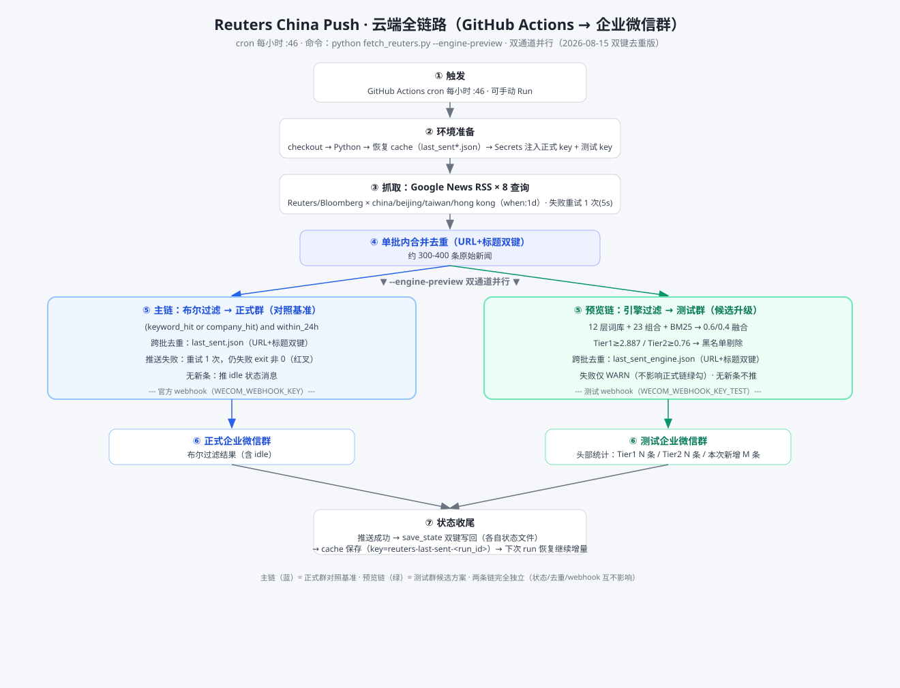

从数据源到企业微信群 · GitHub Actions 每小时 :46 · 双通道并行（2026-08-15 双键去重版）

| # | 环节 | 要点 |
|---|---|---|
| ① | 触发 | GitHub Actions cron 每小时 :46，可手动 Run workflow |
| ② | 环境准备 | checkout → Python → 恢复 cache（last_sent.json + last_sent_engine.json）→ Secrets 注入正式 key + 测试 key |
| ③ | 抓取 | Google News RSS × 8 查询（Reuters/Bloomberg × china/beijing/taiwan/hong kong，when:1d）；失败查询重试 1 次(5s) |
| ④ | 单批内去重 | URL + 标题双键跨查询合并 → 约 300-400 条 |
| ⑤ | 双通道 | 主链布尔 → 正式群；预览链引擎（Tier1≥2.887/Tier2≥0.76）→ 测试群；各自独立跨批双键去重 |
| ⑥ | 推送 | 正式 webhook → 正式群；测试 webhook → 测试群（头部统计 Tier1/Tier2/本次新增） |
| ⑦ | 状态收尾 | 推送成功 → save_state 双键写回 → cache 保存（key=reuters-last-sent-<run_id>）→ 下次恢复增量 |
| 维度 | 主链（布尔）→ 正式群 | 预览链（引擎）→ 测试群 |
|---|---|---|
| 过滤 | (keyword_hit or company_hit) and within_24h | 12 层词库 + 23 组合 + BM25 → 0.6/0.4 融合 → Tier 分层 → 黑名单剔除 |
| 跨批去重 | last_sent.json（URL+标题双键） | last_sent_engine.json（URL+标题双键） |
| 失败处理 | 重试 1 次，仍失败红叉 | 仅 WARN，正式链绿勾保留 |
| 无新条 | 推 idle 状态消息 | 不推（防刷屏） |
Engine preview，不能只看 Actions 状态。